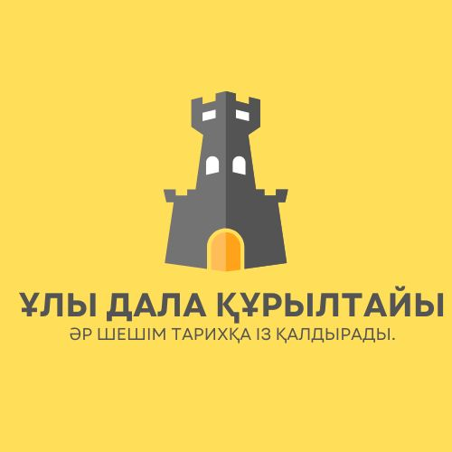
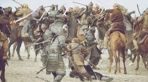
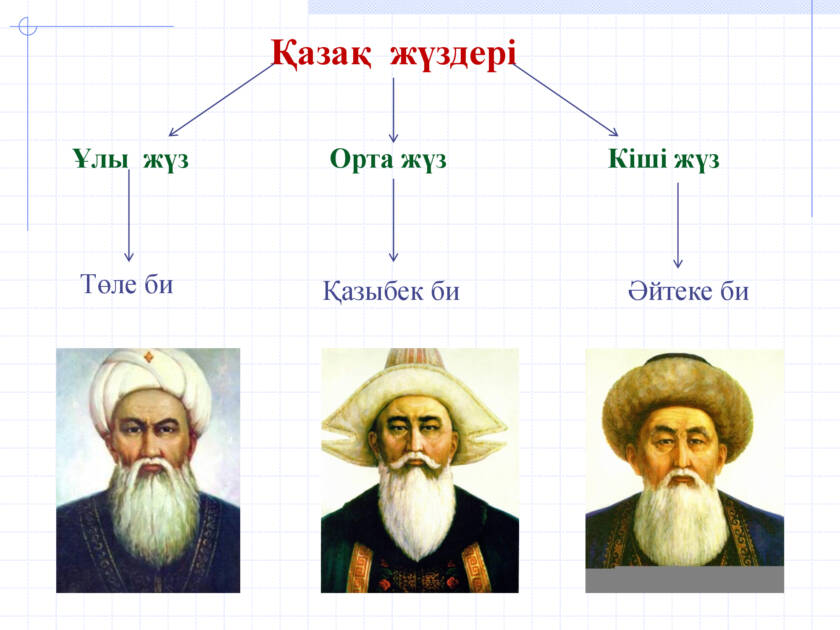
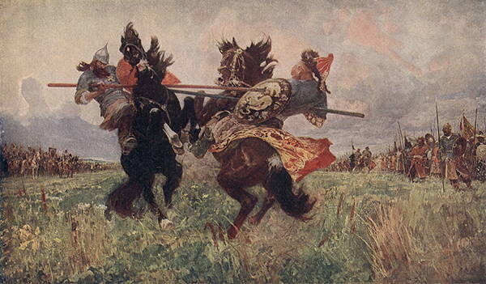

Бұл ойын жоңғар шапқыншылығы кезеңін модельдеу арқылы тарихи ойлауды дамытуға арналған. Ойын барысында сен хан, би, батыр немесе халық рөлін алып, ел тағдырына әсер ететін шешімдер қабылдайсың.

«Ақтабан шұбырынды» – қазақ халқының ең ауыр кезеңдерінің бірі болды

Жоңғар шапқыншылығы қазақ жүздерінің бірігуіне себеп болды

Бұл кезеңде батырлар мен билердің рөлі ерекше маңызды болды